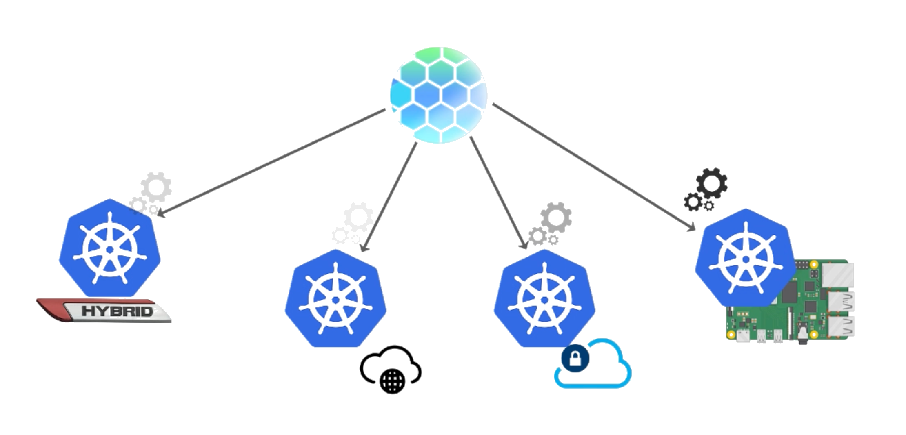

The most natural and flexible way to deploy existing Kubernetes workloads across multiple clusters and clouds. Unleashing the true power of Kubernetes at scale.


The most natural and flexible way to deploy existing Kubernetes workloads across multiple clusters and clouds. Unleashing the true power of Kubernetes at scale.
Build once
Deploy many